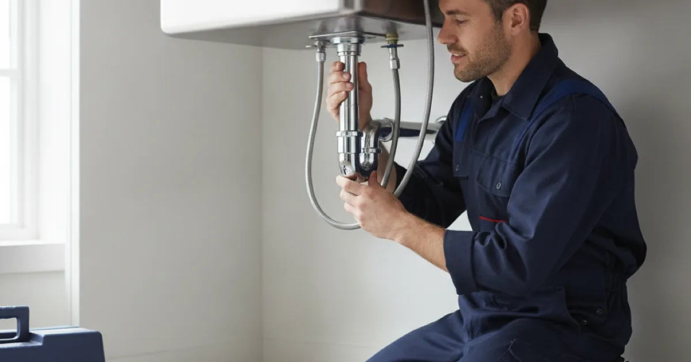

Sink Installation in Westchester County, NY
A sink swap looks simple, and often is — but the connections underneath are where a rushed job leaks quietly for months. We connect it properly the first time.
- Licensed & Insured
- Upfront Pricing
- Clean, Respectful Technicians
- 15+ Years of Experience

What actually matters is underneath
Setting the sink into the counter is the visible part and the easy part. The connections below are where the job is actually done well or badly, and where a leak you do not notice for weeks begins.
The things that matter:
- The drain trap. Correctly sloped and sealed, or it weeps and smells. A trap reassembled hand-tight and hopeful is a classic slow leak.
- Supply connections. New flexible connectors and, where the old shut-off valves are corroded, new valves — because the moment you disturb an old valve is the moment it starts to weep.
- The seal around the rim. Done properly, water on the counter stays on the counter. Done poorly, it runs into the cabinet below.
- Garbage disposal and dishwasher connections, where fitted, which add junctions that each need to be right.
None of this is difficult for someone who does it regularly. All of it is easy to get slightly wrong in a way that does not show until the cabinet floor is ruined. This Old House has a good overview of what installing a kitchen sink actually involves if you want a sense of the steps before we arrive.
New sink going in?
Let us handle the connections so it does not leak in six weeks.
Sink types and what each needs
The style of sink changes the work, and it is worth knowing before you buy.
Drop-in (top-mount) sits in a cut in the counter and is the most forgiving to install or replace. A sensible choice on laminate.
Undermount mounts beneath the counter for a clean look, but relies on strong adhesive and support, and really wants a solid surface like stone. Replacing one is more involved than a drop-in.
Farmhouse (apron-front) often needs cabinet modification to take its weight and depth, so it is as much a carpentry consideration as a plumbing one — worth planning rather than assuming it drops in.
Pedestal and wall-mount bathroom sinks hide less underneath, which means the plumbing has to be neat because some of it shows, and the wall mounting has to be solid.
Jobs worth doing at the same time
Because a sink install already has everything under the counter disconnected, a few related jobs are far cheaper done together than as separate visits.
- Faucet. If yours is tired, now is the moment. Everything is already apart, so matching faucet work adds little to the visit.
- Shut-off valves. Old corroded valves are best replaced while the water is already off and the space is open.
- Garbage disposal. Fitting or replacing one is simplest during a sink install — see a disposal fitted or replaced.
- Supply connectors and the trap, which we replace as standard rather than reusing tired parts.
How the installation goes
We set the sink and, more importantly, make the connections underneath properly: the trap sloped and sealed, new supply connectors, and the seal around the rim done so water on the counter stays on the counter.
For an undermount or farmhouse sink the setting is more involved and often overlaps with the counter installer, so we coordinate on sequence. We test by running water and checking every joint before calling it done, rather than trusting a hand-tight fitting.
What affects the cost
A like-for-like drop-in replacement is a short visit; the price rises with complexity, and we give you the number first. Undermount and farmhouse styles take longer to set, and changing the number of bowls can mean reworking the drain and disposal connections.
As with any older-home job, corroded shut-off valves are best replaced while everything is apart, which we will flag rather than reconnect to something about to weep.
Common questions
Can you install a sink I bought myself?
Yes. Check it fits your counter cut-out and cabinet before buying, particularly for undermount and farmhouse styles, which are less forgiving than a standard drop-in.
Do I need a plumber, or can the counter installer do it?
Counter installers often set the sink, but the plumbing connections — trap, supply, disposal, dishwasher — are our side, and are where leaks start. Many jobs need both trades.
My new sink drains slowly. Why?
Usually the trap or the connection to the existing waste line, not the sink itself. If the branch line it connects to was already partly blocked, a new sink will not fix that — the line needs clearing.
Can I switch from a double bowl to a single, or the reverse?
Usually, though the drain and disposal connections may need reworking to suit the new configuration. Worth mentioning when you call so we bring what the change needs.
How long does it take?
A straightforward like-for-like replacement is a short visit. Changing sink type, adding a disposal, or dealing with corroded old valves adds time — we will give you a realistic figure.
Connected right the first time
Licensed, insured, and neat where it counts.